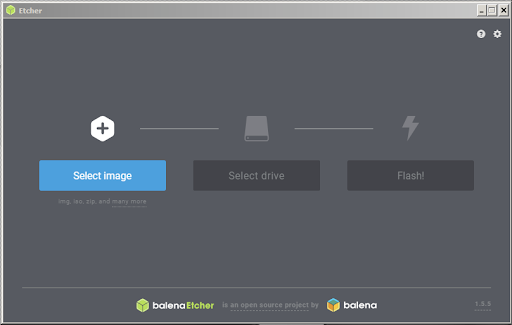
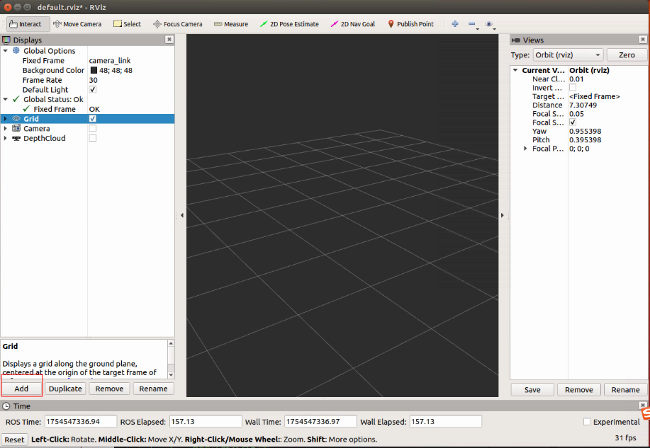
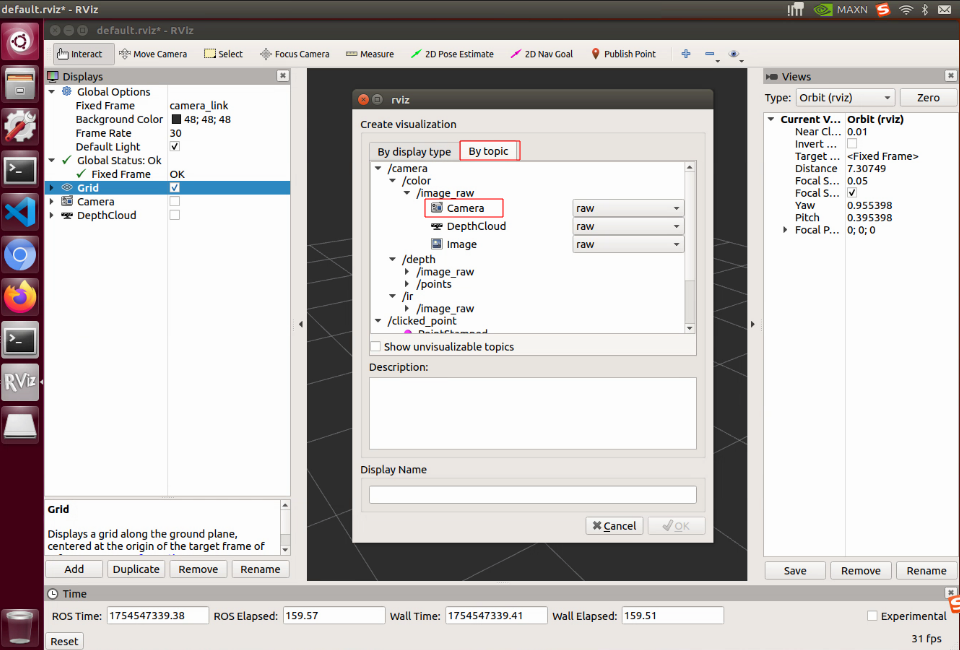
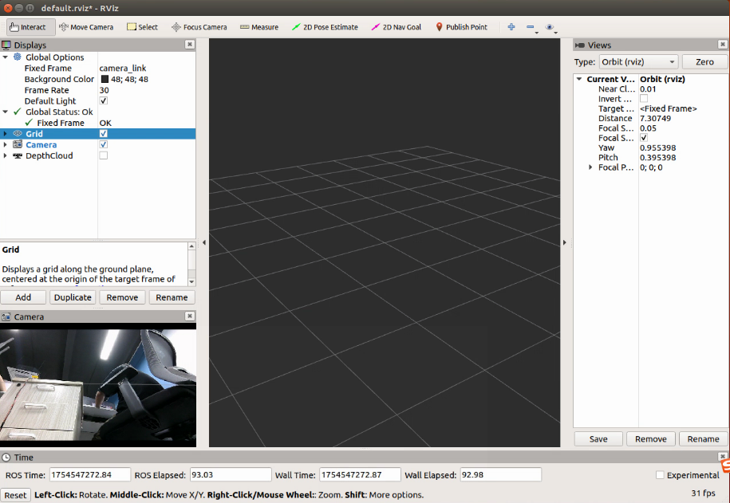
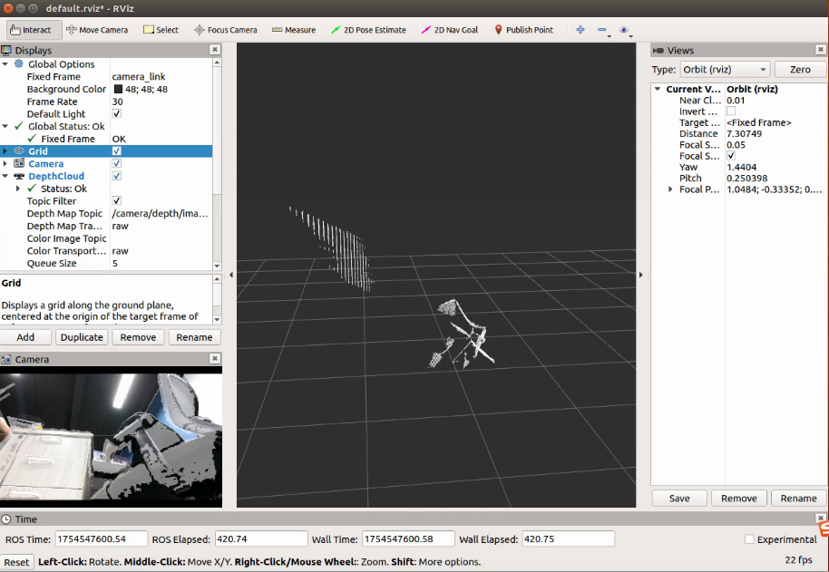
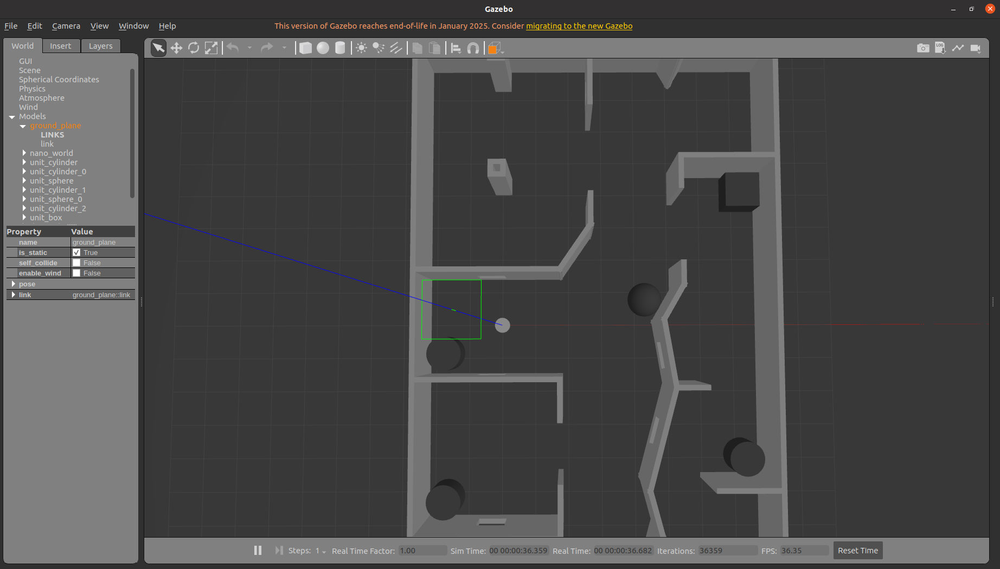
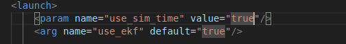
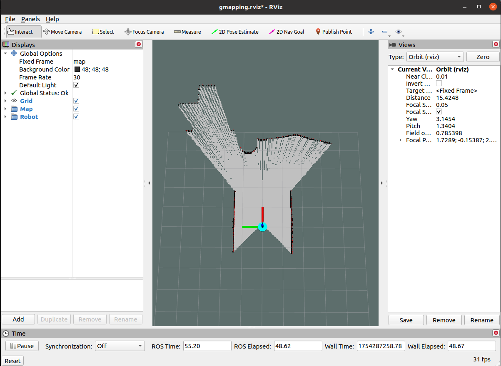
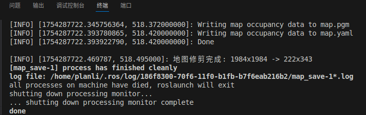
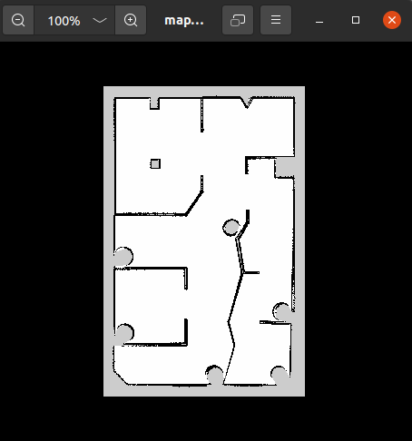

1 AutoTrack-IR-DR200 介绍
AutoTrack-IR-DR200是一款专为室内复杂环境自主移动任务设计的平台，深度融合高精度SLAM（即时定位与建图）算法与智能导航技术，具备环境感知、自主定位、路径规划及动态避障四大核心能力。该平台采用两轮独立差速驱动架构，实现原地转向与全向移动等卓越机动性能，可广泛应用于仓储物流、室内巡检、科研验证等多元化场景。基于模块化系统设计，支持激光雷达、深度相机、IMU（惯性测量单元）、超声波等多种传感器集成，提供灵活的扩展接口，便于用户进行二次开发及功能定制。
本文将详细介绍AutoTrack-IR-DR200平台的构建与实现过程。

1.1 AutoTrack-IR-DR200 特点
- 计算平台：Jetson Nano轻量级嵌入式AI加速平台
- 软件架构：基于ROS框架的模块化软件系统
- 传感器融合：支持激光雷达、IMU、深度相机等多种传感器
- 算法集成：集成GMapping、DWA、TEB等先进算法
- 通信能力：支持RS232、以太网、串口等多种通信协议
- 实时性能：毫秒级数据处理与控制响应
- 扩展性：模块化设计，支持功能定制与二次开发
1.2 工控机接口配置
Jetson Nano B01工控机提供丰富的接口，满足各种传感器和设备的接入需求：
- 电源管理：5~12V DC 输入，多路12V DC 稳压输出
- 通信接口：以太网、USB3.0 、I2C 、SPI 、I2S 、GPIO
- 传感器接口：激光雷达网口、IMU串口、相机USB接口
- 显示输出：HDMI显示输出
- 开发支持：配套SDK、ROS驱动包、仿真环境
1.3 应用场景
AutoTrack-IR-DR200平台广泛适用于多种应用场景：
- 仓储物流：自主货物搬运与仓库管理
- 室内巡检：园区、工厂、实验室等室内环境的自主巡检
- 科研验证：移动机器人算法研究与验证平台
- 教育教学：机器人课程实验与实训平台
- 无人驾驶：自动驾驶技术研究与开发
1.4 AutoTrack-IR-DR200 SLAM系统概述
AutoTrack-IR-DR200平台集成了高精度SLAM（Simultaneous Localization and Mapping）系统，通过集成激光雷达、IMU等多种传感器，实现同时定位与地图构建功能。本系统采用ROS（Robot Operating System）作为软件框架，结合GMapping、DWA、TEB等先进算法，构建完整的自主移动解决方案。本文以DR200圆形底盘为硬件实现示例，展示平台的具体应用。
AutoTrack-IR-DR200系统主要功能包括：
- 多传感器融合感知：集成激光雷达、IMU、深度相机等传感器，获取全方位环境信息
- 高精度定位：利用多传感器融合技术，实现厘米级定位精度
- 实时地图构建：支持2D栅格地图的实时构建与更新
- 智能路径规划：基于全局和局部路径规划算法，实现动态避障与最优路径选择
- 自主导航控制：控制移动底盘实现精确的自主导航与运动控制
- 模块化扩展：支持多种传感器和功能模块的灵活集成与扩展
2 工控机环境
2.1 硬件环境
- 处理器： Cortex-A57，128 核 Maxwell GPU
- 内存： 4 GB 64-bit LPDDR4 25.6 GB/s
- 电源： 5V
- 接口： USB 3.0，USB 2.0，Micro-USB，HDMI，LAN
2.2 软件环境
- 系统版本：Ubuntu-18.04
- ROS版本：ROS Melodic
2.2.1 Ubuntu-18.04安装
(1)第一种烧录
首先需要下载SD Card Formatter来对TF卡进行格式化处理。将TF卡插入读卡器，再将读卡器插入电脑并运行SD Card Formatter。

1.点击Select card选择自己TF卡的名称。
2.点击“Quick format”快速格式。
3.点击“Format”开始格式化，在警告弹窗中选择是。
在NVIDIA官网下载镜像文件。
 下载并打开Etcher烧录工具。
下载并打开Etcher烧录工具。

1.点击“Select image”选择镜像文件即上一步下载的镜像文件。 2.将插入TF卡的读卡器插入电脑,若未插入则显示

3.点击“Select drive” 选择需要烧录的磁盘即为TF卡的磁盘设备。
4.点击“Flash”等待烧录完成
最后将读卡器中的TF卡插入Jetson nano 插上电源即可启动系统。
（2）第二种烧录
器材准备
Jetson Nano 主板。
Ubuntu虚拟机（或电脑主机）。
5V 4A电源适配器。
跳线帽（或杜邦线）。
USB数据线（Micro USB接口，可传输数据）。
硬件配置(进入recovery 模式)
1.用跳帽或者杜邦线短接FC REC和GND引脚，位置如下图，位于核心板底下。 2.连接DC电源到圆形供电口， 稍等片刻。
3.用USB线（注意要是数据线）连接Jetson Nano的Micro USB接口到Ubuntu主机。

4.烧录系统，Jetson Nano需进入recovery模式，连接到Ubuntu电脑。
cd ~/az/Linux_for_Tegra sudo ./flash.sh jetson-nano-emmc mmcblk0p1 烧录完成之后，去掉底板的跳帽，接入显示器，重新上电，按照提示进行开机配置（如果是设置的pre-config， 上电后直接进入系统）。5.启动Jetson Nano,在Jetson Nano检查SD卡是否被识别：
sudo ls /dev/mmcblk*6.如果有识别到mmcblk1p1 设备，说明SD卡被正常识别了。
7.格式化SD卡
sudo mkfs.ext4 /dev/mmcblk1如果出现以下提示已有文件系统

先卸载SD卡：
sudo umount /media/(这里按下Tab键自动补全)再次使用格式化命令格式化SD卡。 格式化成功后输入：
sudo ls /dev/mmcblk*只有mmcblk1，如下图：

8.修改启动路径
sudo vi /boot/extlinux/extlinux.conf9.找到语句APPEND ${cbootargs} quiet root=/dev/mmcblk0p1 rw rootwait rootfstype=ext4 console=ttyS0,115200n8 console=tty0,将mmcblk0p1修改为mmcblk1保存
10.挂载SD卡
sudo mount /dev/mmcblk1 /mnt11.复制系统到SD卡(该过程没有信息打印请耐心等待)
sudo cp -ax / /mnt12.复制完成后卸载SD卡（不是拔掉SD卡）
sudo umount /mnt/13.重启系统
sudo reboot
2.2.2 ROS Melodic安装
备份source.list
sudo cp /etc/apt/sources.list /etc/apt/sources.list.bak
更改软件源
sudo gedit /etc/apt/sources.list
将其中内容全部删除，修改为
deb http://mirrors.tuna.tsinghua.edu.cn/ubuntu-ports/ bionic main multiverse restricted universe
deb http://mirrors.tuna.tsinghua.edu.cn/ubuntu-ports/ bionic-security main multiverse restricted universe
deb http://mirrors.tuna.tsinghua.edu.cn/ubuntu-ports/ bionic-updates main multiverse restricted universe
deb http://mirrors.tuna.tsinghua.edu.cn/ubuntu-ports/ bionic-backports main multiverse restricted universe
deb-src http://mirrors.tuna.tsinghua.edu.cn/ubuntu-ports/ bionic main multiverse restricted universe
deb-src http://mirrors.tuna.tsinghua.edu.cn/ubuntu-ports/ bionic-security main multiverse restricted universe
deb-src http://mirrors.tuna.tsinghua.edu.cn/ubuntu-ports/ bionic-updates main multiverse restricted universe
deb-src http://mirrors.tuna.tsinghua.edu.cn/ubuntu-ports/ bionic-backports main multiverse restricted universe
进行软件更新
sudo apt-get update
配置Ubuntu软件仓库，并设置密钥：
sudo sh -c '. /etc/lsb-release && echo "deb http://mirrors.ustc.edu.cn/ros/ubuntu/ $DISTRIB_CODENAME main" > /etc/apt/sources.list.d/ros-latest.list'
sudo apt-key adv --keyserver 'hkp://keyserver.ubuntu.com:80' --recv-key C1CF6E31E6BADE8868B172B4F42ED6FBAB17C654
更新ros软件源
sudo apt update
安装ros
sudo apt install ros-melodic-desktop-full
设置环境：
echo "source /opt/ros/melodic/setup.bash" >> ~/.bashrc
source ~/.bashrc
安装后，在终端执行roscore，测试ROS：

如图显示则ROS1 Melodic安装无误。
安装工程包
步骤1：获取工程源码
# 从GitHub克隆
cd ~
git clone https://github.com/PlanRobotShenZhen/AutoTrack-IR-DR200.git catkin_ws
步骤2：安装系统依赖
### IMU
sudo apt-get install libqt5serialport5-dev
### Gmapping
sudo apt install ros-melodic-gmapping
sudo apt install ros-melodic-map-server
### navigation
sudo apt install ros-melodic-robot-localization
sudo apt install ros-melodic-robot-pose-ekf
sudo apt install ros-melodic-navigation
sudo apt install ros-melodic-navigation*
sudo apt install ros-melodic-move-base
sudo apt install ros-melodic-amcl
sudo apt install ros-melodic-dwa-local-planner
sudo apt install ros-melodic-teb-local-planner
sudo apt-get install ros-melodic-serial
sudo apt-get install ros-melodic-tf2-sensor-msgs
# 安装Qt5串口开发库
sudo apt-get install libqt5serialport5-dev
sudo apt install libzmqpp-dev
步骤3：编译工程
# 编译(单线程，避免依赖问题)
cd catkin_ws
catkin_make -j1
# 重新加载环境
source ~/catkin_ws/devel/setup.bash
步骤4：串口设备配置，需连接实机，不连接情况下也可进行操作但无效，后续连接实机还需进行此步
# 复制串口规则文件
sudo cp ./tools/serial/serial_rules/* /etc/udev/rules.d/
# 重新加载udev规则
sudo udevadm control --reload-rules
sudo udevadm trigger
# 将用户添加到dialout组（串口访问权限）
sudo usermod -aG dialout pl
sudo usermod -aG dialout root
# 重新登录或重启以使权限生效
步骤5：udev串口配置
创建systemd服务文件
bash
sudo gedit /etc/systemd/system/ttyths1-permissions.service
添加以下内容：
ini
[Unit]
Description=Set permissions for ttyTHS1
After=multi-user.target
[Service]
Type=oneshot
ExecStart=/bin/chmod 666 /dev/ttyTHS1
RemainAfterExit=yes
[Install]
WantedBy=multi-user.target
启用服务需连接实机
bash
sudo systemctl enable ttyths1-permissions.service
sudo systemctl start ttyths1-permissions.service
后续第三步需连接实机，不连接实机情况下可直接进行第五步仿真实验
3 外设配置
3.1 LDS-50C-C30E激光雷达
LDS-50C-C30E激光雷达,采用TOF(Time of Fight)飞行时间测距技术,根据激光飞行时间来测量距离。在40m的有效探测距离内测距精度可达到±25mm，测距精度不会随距离变化而变化。同时具备自主研发的360度扫描，运行可靠。
规格参数：

3.1.1 硬件连接和网络配置
物理连接: jetson nano连接上雷达的以太网口。
网络配置：修改网口信息，保证与雷达处于同一局域网内。

3.1.2 查看雷达点云
#启动雷达驱动
roslaunch bluesea2 udp_lidar.launch
#打开rviz查看点云数据
rviz -d /home/plan/AutoTrack-IR-DR200/src/drivers/bluesea2/rviz/demo.rviz

3.2 IMU
3.2.1 硬件介绍和连接
默认配备维特智能九轴IMU WT61C-232，进行配置与校准
3.2.2 下载和编译驱动
步骤1：下载源码
# 进入工作空间
cd ~/catkin_ws
# 克隆仓库到src目录
git clone --recursive https://github.com/ElettraSciComp/witmotion_IMU_ros.git src/witmotion_ros
步骤2：编译驱动
# 编译特定包
catkin_make --pkg witmotion_ros
# 重新加载环境
source devel/setup.bash
3.2.3 运行和测试IMU
步骤1：启动IMU驱动
# 确保环境变量已加载
source ~/catkin_ws/devel/setup.bash
# 启动IMU驱动
roslaunch witmotion_ros witmotion.launch
步骤2：查看IMU数据
# 查看IMU数据
rostopic echo /imu/data

3.3 深度相机
3.3.1 Dabai DW 双目结构光相机
针对服务机器人场景，奥比中光基于自主研发的ASIC芯片，推出高性能双目结构光相机Dabai DW，平均功耗低于1.2W，终端只需USB 2.0接口，即可获得高精度的3D深度信息，供后端调用，赋能机器人实现感知、避障、导航等功能。
3.3.2 安装驱动依赖
- 安装相关依赖库
sudo apt install libgflags-dev ros-melodic-image-geometry ros-melodic-camera-info-manager \
ros-melodic-image-transport-plugins ros-melodic-compressed-image-transport \
ros-melodic-image-transport ros-melodic-image-publisher libgoogle-glog-dev libusb-1.0-0-dev libeigen3-dev \
ros-melodic-diagnostic-updater ros-melodic-diagnostic-msgs \
libdw-dev
- 安装 udev 规则
cd ~/catkin_ws
source ./devel/setup.bash
roscd orbbec_camera
sudo bash ./scripts/install_udev_rules.sh
3.3.3 启动相机
启动相机并显示RGB图像与深度图像
终端一：
source ./devel/setup.bash roslaunch orbbec_camera dabai_dcw.launch终端二：
source ./devel/setup.bash rviz
在rviz中点击Add 再点击By topic 选择/camera /color下的camera查看实时图像



若需要显示深度图像则选择/camera /depth camera

4 算法原理
4.1 建图算法
4.1.1 Gmapping算法
Gmapping是一个基于2D激光雷达使用RBPF（Rao-Blackwellized Particle Filters）算法完成二维栅格地图构建的SLAM算法。
优点：gmapping可以实时构建室内环境地图，在小场景中计算量少，且地图精度较高，对激光雷达扫描频率要求较低。
缺点：随着环境的增大，构建地图所需的内存和计算量就会变得巨大，所以gmapping不适合大场景构图。
具体算法详细解释可以参考文章
4.2 导航算法
4.2.1 路径规划算法
- 全局路径规划算法Dijkstra
Dijkstra 算法，是由荷兰计算机科学家 Edsger Wybe Dijkstra 在1956年发现的算法，戴克斯特拉算法使用类似广度优先搜索的方法解决赋权图的单源最短路径问题。
具体算法详细解释可以参考文章
- 局部路径规划算法
动态窗口算法(Dynamic Window Approaches, DWA) 是基于预测控制理论的一种次优方法，因其在未知环境下能够安全、有效的避开障碍物, 同时具有计算量小, 反应迅速、可操作性强等特点。
具体算法详细解释可以参考文章
TEB（Timed Elastic Band）路径规划算法是一种基于优化的局部路径规划算法，广泛应用于移动机器人、自动驾驶等领域。它通过在机器人的运动轨迹上引入时间信息，结合动力学约束和环境约束，生成平滑且可行的路径。
具体算法详细解释可以参考文章
5 仿真导航实验
5.1 工程环境
工程目录结构
~/catkin_ws
├── src
│ ├── CMakeLists.txt
│ ├── bot_navigation
│ │ ├── launch
│ │ ├──amcl.launch
│ │ ├──ekf.launch
│ │ ├──gmapping.launch
│ │ ├──localization.launch
│ │ ├──move_base.launch
│ │ ├──navigation.launch
│ │ ├──save_map.launch
│ │ ├── maps
│ │ ├── param
│ │ ├── rviz
│ │ ├── scripts
│ ├── drivers
│ ├── CMakeLists.txt
└── tools
├── README.md
~/catkin_ws(ROS工作空间根目录)maps/：存放建图生成栅格地图文件（如.pgm）src/：核心功能包源码目录bot_navigation/：机器人导航相关功能launch/：机器人建图导航等启动文件amcl.launch：定位节点启动配置文件ekf.launch：扩展卡尔曼滤波配置文件gmapping.launch：Gmapping算法建图文件localization.launch：配置机器人定位功能的核心启动文件move_base.launch: 自主导航的路径规划与运动控制启动文件navigation.launch: 集成化启动配置文件（包括：组合定位、路径规划和可视化模块）save_map.launch: 配置并启动地图保存启动文件
mapps/：地图存放包map.pgm：二进制图像文件,用于存储灰度图像数据。map.yaml：机器人导航中的地图配置文件
param/：导航栈核心参数包dr200/：存储机器人导航栈的核心参数配置文件
rviz/: 导航建图可视化界面配置文件- gmapping.rviz: 建图可视化界面配置文件
- navigation.rviz: 导航可视化界面配置文件
scripts/: 地图保存等脚本文件drivers/: 传感器底层驱动包
tools/：辅助工具或脚本（非ROS功能包）
5.2 DR200底盘仿真
5.2.1 启动Gazebo仿真环境
运行DR200底盘仿真包dr200的run.launch：
# 确保工作空间环境已加载
source ~/catkin_ws/devel/setup.bash
roslaunch dr200_description gazebo.launch publish_odom_tf:=true

5.2.2 控制机器人运动
方法1：使用键盘控制
# 安装键盘控制包（如果未安装）
sudo apt-get install ros-melodic-teleop-twist-keyboard
# 启动键盘控制
rosrun teleop_twist_keyboard teleop_twist_keyboard.py
# 按照提示使用以下按键控制：
# u i o
# j k l
# m , .
# q/z : 增加/减少最大速度
# w/x : 增加/减少线速度
# e/c : 增加/减少角速度
方法2：使用rqt_robot_steering图形控制
# 启动图形控制界面
rosrun rqt_robot_steering rqt_robot_steering
# 在界面中使用滑块或输入框控制线速度和角速度
5.3 构建栅格地图
5.3.1 配置仿真时间
首先需要让系统采用仿真时间，即修改~/catkin_ws/src/bot_navigation/gmapping.launch中的/use_sim_time参数为true：
gedit ~/catkin_ws/src/bot_navigation/launch/gmapping.launch
修改内容：
<!-- 在launch文件中找到并修改以下参数 -->
<param name="/use_sim_time" value="true" />

5.3.2 启动建图程序
启动Gmapping建图
# 新开终端，加载环境
source ~/catkin_ws/devel/setup.bash
#启动仿真环境
roslaunch dr200_description gazebo.launch publish_odom_tf:=false
# 新开终端，加载环境
source ~/catkin_ws/devel/setup.bash
#启动Gmapping建图算法
roslaunch bot_navigation gmapping.launch use_ekf:=true
5.3.3 控制机器人进行建图
使用rqt_robot_steering图形控制，在界面中使用滑块或输入框控制线速度和角速度
rosrun rqt_robot_steering rqt_robot_steering


5.3.4 保存建图结果
步骤1：完成建图
在另外一个终端运行
# 确保工作空间环境已加载
source ~/catkin_ws/devel/setup.bash
roslaunch bot_navigation save_map.launch

步骤2：查看保存的地图
# 检查地图保存目录
ls -la ~/catkin_ws/src/bot_navigation/maps
# 应该看到类似文件：
# map.pgm # 栅格地图
# mpa.yaml # 地图配置文件

5.4 导航
5.4.1 启动Gazebo仿真环境
运行DR200底盘仿真包dr200_description的gazebo.launch：
# 确保工作空间环境已加载
source ~/catkin_ws/devel/setup.bash
roslaunch dr200_description gazebo.launch publish_odom_tf:=false
5.4.2 启动导航程序
可配置~/catkin_ws/src/bot_navigation/param目录下的导航规划器参数
具体可参考：ROS::导航参数配置详解，rosrun rqt_reconfigure rqt_reconfigure可动态调整
先进入catkin_ws/src/bot_navigation/map中删除map.pgm和map.yaml地图，再进入刚刚保存的地图包中将刚刚创建的map.pgm和map.yaml地图复制出来，在终端运行导航启动文件：
source ~/catkin_ws/devel/setup.bash
# 导航
roslaunch bot_navigation navigation.launch use_ekf:=true open_rviz:=true slow_mode:=false move_forward_only:=true

5.4.3 设置ROS导航目标点
在rviz中点击 2D Nav Goal在图中设置目标点


6 实机导航实验
6.1 工程环境
参考 5.1 工程环境
6.2 DR200底盘
确保已连接以下模块：
- IMU
- LDS-50C-C30E
- DR200 小车底盘
6.3 构建栅格地图
启动真实环境下的小车驱动与描述
# 启动真实环境下的小车驱动与描述
roslaunch dr200_description run.launch odom_publish_tf:=false
# gmapping建图
roslaunch bot_navigation gmapping.launch use_ekf:=true

保存地图
# 保存地图
roslaunch bot_navigation save_map.launch
6.4 导航
# 启动真实环境下的小车驱动与描述
roslaunch dr200_description run.launch odom_publish_tf:=false
# 导航
roslaunch bot_navigation navigation.launch use_ekf:=true open_rviz:=true slow_mode:=false move_forward_only:=true
在rviz中点击2D Pose Estimate对机器人进行重定位

点击 2D Nav Goal设置目标点来进行导航

7 多点导航
1. 创建主启动脚本 dr200_navigation_start.sh
打开终端
cd catkin_ws
touch dr200_navigation_start.sh
将以下内容全部加入新建脚本中
#!/bin/bash
LOG_DIR="/home/$(whoami)/ros_logs"
mkdir -p $LOG_DIR
STARTUP_LOG="$LOG_DIR/dr200_startup.log"
echo "=== DR200导航系统启动 - $(date) ===" >> $STARTUP_LOG
# 设置环境变量
export ROS_MASTER_URI=http://localhost:11311
export ROS_HOSTNAME=localhost
export DISPLAY=:0
# 等待系统服务完全启动
echo "$(date): 等待系统服务启动..." | tee -a $STARTUP_LOG
sleep 20
# 设置ROS环境
source /opt/ros/noetic/setup.bash
source /home/$(whoami)/catkin_ws/devel/setup.bash
# 函数：检查ROS master
check_ros_master() {
timeout 10 rostopic list > /dev/null 2>&1
return $?
}
# 函数：检查move_base话题
check_move_base_ready() {
topics=$(timeout 10 rostopic list 2>/dev/null)
echo "$topics" | grep -q "/move_base/goal" && \
echo "$topics" | grep -q "/move_base/status"
return $?
}
# 启动roscore（如果未运行）
if ! check_ros_master; then
echo "$(date): 启动roscore..." | tee -a $STARTUP_LOG
roscore >> $LOG_DIR/roscore.log 2>&1 &
ROSCORE_PID=$!
sleep 8
fi
# 第一步：启动机器人硬件和传感器
echo "$(date): 启动机器人硬件和传感器..." | tee -a $STARTUP_LOG
roslaunch dr200_description run.launch \
chassis_port:="/dev/dr200_chassis" \
chassis_baudrate:="115200" \
odom_publish_tf:="false" \
use_camera:="false" >> $LOG_DIR/run_launch.log 2>&1 &
RUN_LAUNCH_PID=$!
echo "run.launch启动完成 (PID: $RUN_LAUNCH_PID)" | tee -a $STARTUP_LOG
# 等待硬件启动
sleep 15
# 第二步：启动导航系统
echo "$(date): 启动导航系统..." | tee -a $STARTUP_LOG
roslaunch bot_navigation navigation.launch \
use_ekf:="true" \
open_rviz:="true" \
slow_mode:="false" \
move_forward_only:="true" \
base_local_planner:="dwa_local_planner/DWAPlannerROS" >> $LOG_DIR/navigation_launch.log 2>&1 &
NAV_LAUNCH_PID=$!
echo "navigation.launch启动完成 (PID: $NAV_LAUNCH_PID)" | tee -a $STARTUP_LOG
# 等待导航系统初始化
echo "$(date): 等待导航系统初始化..." | tee -a $STARTUP_LOG
for i in {1..30}; do
if check_move_base_ready; then
echo "$(date): 导航系统就绪!" | tee -a $STARTUP_LOG
break
fi
echo "$(date): 等待导航系统... ($i/30)" >> $STARTUP_LOG
sleep 2
done
# 第三步：启动目标点序列导航
echo "$(date): 启动目标点序列导航..." | tee -a $STARTUP_LOG
rosrun bot_navigation sequential_goal_sender.py >> $LOG_DIR/goal_sender.log 2>&1 &
GOAL_SENDER_PID=$!
echo "目标点发送器启动完成 (PID: $GOAL_SENDER_PID)" | tee -a $STARTUP_LOG
# 保存PID文件以便管理
echo $RUN_LAUNCH_PID > $LOG_DIR/run_launch.pid
echo $NAV_LAUNCH_PID > $LOG_DIR/navigation_launch.pid
echo $GOAL_SENDER_PID > $LOG_DIR/goal_sender.pid
echo "$(date): 所有系统启动完成!" | tee -a $STARTUP_LOG
# 监控进程状态
while true; do
sleep 30
# 检查关键进程是否存活
if ! kill -0 $NAV_LAUNCH_PID 2>/dev/null; then
echo "$(date): 警告：导航进程异常终止" | tee -a $STARTUP_LOG
# 可以在这里添加重启逻辑
fi
# 记录系统状态
echo "$(date): 系统运行正常" >> $LOG_DIR/health_check.log
done
给脚本执行权限：
sudo chmod +x ~/dr200_navigation_start.sh
2. 创建目标点序列发送器 sequential_goal_sender.py
在 ~/catkin_ws/src/bot_navigation/scripts/ 目录下创建脚本：
touch sequential_goal_sender.py
将以下内容全部加入新建脚本
#!/usr/bin/env python
# -*- coding: utf-8 -*-
import rospy
import actionlib
import time
import math
from move_base_msgs.msg import MoveBaseAction, MoveBaseGoal
from actionlib_msgs.msg import GoalStatus
from geometry_msgs.msg import Pose, Point, Quaternion
from tf.transformations import quaternion_from_euler
class DR200GoalSender:
def __init__(self):
rospy.init_node('dr200_sequential_goal_sender', anonymous=True)
# 等待move_base服务器
rospy.loginfo("等待move_base action服务器...")
self.move_base_client = actionlib.SimpleActionClient('move_base', MoveBaseAction)
if not self.move_base_client.wait_for_server(rospy.Duration(30)):
rospy.logerr("无法连接move_base服务器!")
return
rospy.loginfo("move_base服务器连接成功!")
# 定义DR200的目标点序列
self.goal_sequence = self.define_dr200_goals()
# 配置参数
self.wait_time_between_goals = rospy.get_param('~wait_time_between_goals', 5) # 目标点间等待时间
self.navigation_timeout = rospy.get_param('~navigation_timeout', 180) # 单目标点导航超时时间
self.enable_loop = rospy.get_param('~enable_loop', True) # 是否循环执行
def define_dr200_goals(self):
"""定义DR200机器人的目标点序列"""
goals = [
{
'name': '工作站A',
'position': Point(1.0, 0.5, 0.0),
'orientation': self.euler_to_quaternion(0, 0, 0)
},
{
'name': '充电桩',
'position': Point(2.5, 1.2, 0.0),
'orientation': self.euler_to_quaternion(0, 0, math.radians(45))
},
{
'name': '工作站B',
'position': Point(4.0, 0.0, 0.0),
'orientation': self.euler_to_quaternion(0, 0, math.radians(90))
},
{
'name': '起始点',
'position': Point(0.0, 0.0, 0.0),
'orientation': self.euler_to_quaternion(0, 0, math.radians(180))
}
]
return goals
def euler_to_quaternion(self, roll, pitch, yaw):
"""将欧拉角转换为四元数"""
quat = quaternion_from_euler(roll, pitch, yaw)
return Quaternion(*quat)
def send_goal(self, goal_data):
"""发送单个目标点"""
rospy.loginfo("导航到: %s (x:%.2f, y:%.2f)",
goal_data['name'],
goal_data['position'].x,
goal_data['position'].y)
goal = MoveBaseGoal()
goal.target_pose.header.frame_id = "map"
goal.target_pose.header.stamp = rospy.Time.now()
goal.target_pose.pose.position = goal_data['position']
goal.target_pose.pose.orientation = goal_data['orientation']
# 发送目标
self.move_base_client.send_goal(goal)
# 等待执行结果
success = self.move_base_client.wait_for_result(rospy.Duration(self.navigation_timeout))
if not success:
rospy.logwarn("导航到 %s 超时 (%.1f秒)", goal_data['name'], self.navigation_timeout)
self.move_base_client.cancel_goal()
return False
else:
state = self.move_base_client.get_state()
if state == GoalStatus.SUCCEEDED:
rospy.loginfo("✓ 成功到达: %s", goal_data['name'])
return True
else:
rospy.logwarn("导航到 %s 失败，状态码: %d", goal_data['name'], state)
return False
def run_sequence(self):
"""执行目标点序列"""
if not self.move_base_client:
rospy.logerr("move_base客户端未初始化!")
return
rospy.loginfo("开始执行DR200目标点序列导航，共 %d 个目标点", len(self.goal_sequence))
cycle_count = 0
max_cycles = 20 # 最大循环次数
while not rospy.is_shutdown() and cycle_count < max_cycles:
cycle_count += 1
rospy.loginfo("=== 第 %d 轮巡逻循环开始 ===", cycle_count)
success_count = 0
for i, goal_data in enumerate(self.goal_sequence):
if rospy.is_shutdown():
return
rospy.loginfo("执行目标点 %d/%d: %s", i+1, len(self.goal_sequence), goal_data['name'])
try:
if self.send_goal(goal_data):
success_count += 1
# 目标点之间的等待（最后一个目标点不等待）
if i < len(self.goal_sequence) - 1:
rospy.loginfo("到达 %s，等待 %d 秒后前往下一站...",
goal_data['name'], self.wait_time_between_goals)
# 分段等待，便于响应关机信号
for j in range(self.wait_time_between_goals):
if rospy.is_shutdown():
return
time.sleep(1)
except rospy.ROSInterruptException:
rospy.loginfo("导航被中断")
return
except Exception as e:
rospy.logerr("导航过程中发生错误: %s", str(e))
# 继续执行下一个目标点
rospy.loginfo("第 %d 轮循环完成，成功到达 %d/%d 个目标点",
cycle_count, success_count, len(self.goal_sequence))
# 一轮完成后等待一段时间再开始下一轮
if cycle_count < max_cycles and self.enable_loop:
rospy.loginfo("本轮巡逻完成，等待15秒后开始下一轮...")
for j in range(15):
if rospy.is_shutdown():
return
time.sleep(1)
rospy.loginfo("DR200导航任务完成，共执行 %d 轮巡逻循环", cycle_count)
if __name__ == '__main__':
try:
sender = DR200GoalSender()
if sender.move_base_client:
sender.run_sequence()
else:
rospy.logerr("无法初始化导航客户端")
except rospy.ROSInterruptException:
rospy.loginfo("DR200导航程序被中断")
except Exception as e:
rospy.logerr("DR200导航程序发生错误: %s", str(e))
给Python脚本执行权限：
sudo chmod +x ~/catkin_ws/src/bot_navigation/scripts/sequential_goal_sender.py
3. 创建systemd服务文件
创建 /etc/systemd/system/dr200_navigation.service：终端输入
sudo gedit /etc/systemd/system/dr200_navigation.service
添加以下内容
[Unit]
Description=DR200 Autonomous Navigation Service
After=network.target
Wants=network.target
StartLimitIntervalSec=0
[Service]
Type=simple
User=你的用户名
Group=你的用户组
Environment=DISPLAY=:01. 创建systemd服务文件
新开终端
bash
sudo gedit /etc/systemd/system/ttyths1-permissions.service
添加内容
ini
[Unit]
Description=Set permissions for ttyTHS1
After=multi-user.target
[Service]
Type=oneshot
ExecStart=/bin/chmod 666 /dev/ttyTHS1
RemainAfterExit=yes
[Install]
WantedBy=multi-user.target
新开终端
bash
sudo systemctl enable ttyths1-permissions.service
sudo systemctl start ttyths1-permissions.service
新开终端
cd catkin_ws
touch dr200_navigation.service
打开文件添加
[Unit]
Description=DR200 Autonomous Navigation Service
After=network.target
Wants=network.target
StartLimitIntervalSec=0
[Service]
Type=simple
User=你的用户名
Group=你的用户组
Environment=DISPLAY=:0
Environment=XAUTHORITY=/home/你的用户名/.Xauthority
WorkingDirectory=/home/你的用户名
ExecStart=/bin/bash /home/你的用户名/dr200_navigation_start.sh
Restart=on-failure
RestartSec=10s
StandardOutput=journal
StandardError=journal
TimeoutStartSec=300
TimeoutStopSec=60
[Install]
WantedBy=multi-user.target
4. 启用和管理服务
# 重新加载systemd配置
sudo systemctl daemon-reload
# 启用开机自启
sudo systemctl enable dr200_navigation.service
# 立即启动服务
sudo systemctl start dr200_navigation.service
# 检查服务状态
sudo systemctl status dr200_navigation.service
# 查看服务日志
sudo journalctl -u dr200_navigation.service -f
# 停止服务
sudo systemctl stop dr200_navigation.service
5. 创建管理脚本 manage_dr200_nav.sh
打开终端
cd catkin_ws
touch manage_dr200_nav.sh
添加以下内容
#!/bin/bash
# DR200导航系统管理脚本
case "$1" in
start)
echo "启动DR200导航系统..."
sudo systemctl start dr200_navigation.service
;;
stop)
echo "停止DR200导航系统..."
sudo systemctl stop dr200_navigation.service
;;
restart)
echo "重启DR200导航系统..."
sudo systemctl restart dr200_navigation.service
;;
status)
sudo systemctl status dr200_navigation.service
;;
logs)
sudo journalctl -u dr200_navigation.service -f
;;
enable)
echo "启用DR200导航系统开机自启..."
sudo systemctl enable dr200_navigation.service
;;
disable)
echo "禁用DR200导航系统开机自启..."
sudo systemctl disable dr200_navigation.service
;;
*)
echo "用法: $0 {start|stop|restart|status|logs|enable|disable}"
exit 1
;;
esac
给管理脚本执行权限：
sudo chmod +x ~/manage_dr200_nav.sh
注：用户需根据自己的地图修改坐标信息


8 结论
本文系统阐述了基于DR200底盘的AutoTrack-IR-DR200的SLAM系统构建过程。该系统开发以DR200底盘为硬件基础，首先完成了工控机环境配置，通过Ubuntu 18.04操作系统与ROS Melodic框架的部署，为后续算法开发建立标准化开发环境。
通过ROS基础教程的学习，掌握了ROS文件系统、节点通信模型等核心概念，并通过实际的话题通信示例加深了理解。在外设配置方面，成功集成了LDS-50C-C30E激光雷达和维特智能九轴IMU，为SLAM系统提供了必要的传感器数据支持。
导航系统验证阶段，先在Gazebo仿真环境中验证Gmapping建图算法有效性，继而构建包含障碍物检测、路径规划、定位导航的完整功能体系，最终通过实车测试验证了系统在动态环境中的鲁棒性，形成从环境感知、地图构建到自主导航的完整功能闭环。该系统构建过程形成的可复用开发框架，在服务机器人等领域展现出显著工程应用价值，实验结果表明其在典型场景下具备厘米级定位精度和动态避障能力。